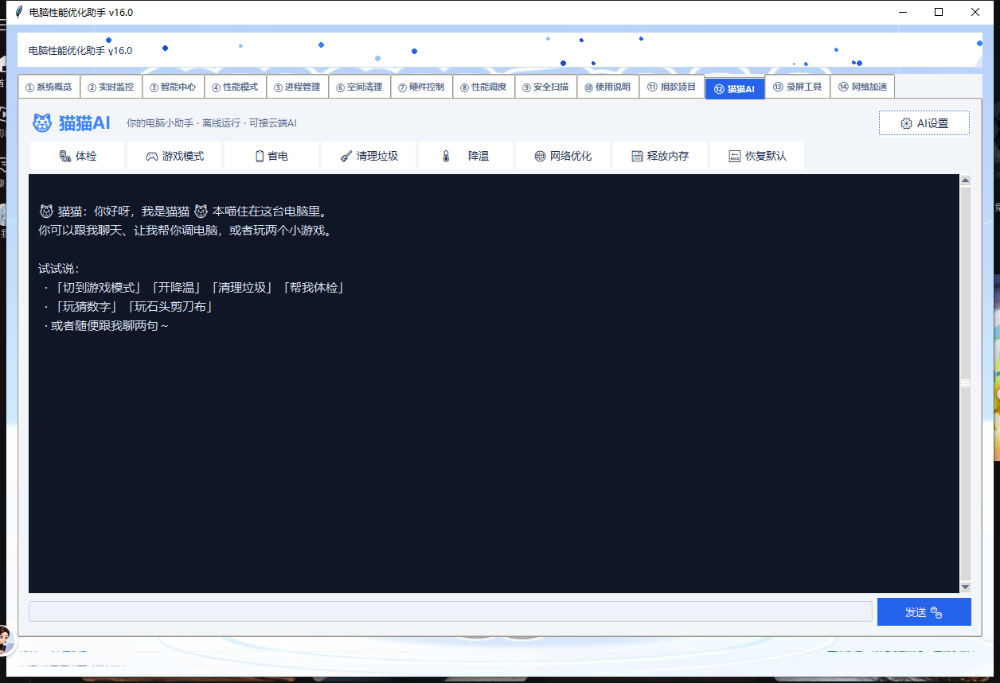

一台电脑、双击就开。免安装、免 Python、不需要账号、不联网。 本机能做的事它真做：改电源计划、调 CPU 频率、写 NVAPI 显卡频率偏移、真实风扇调速、清缓存、录屏、改 TCP/DNS 参数——不是点一下就显示"优化完成"的空壳。
电脑性能优化助手.exe
下载 exe（70.7 MB） 下载使用说明.txtSHA-256：28c8aba898a3c49ac10b144f4138c1961dfaff1c55cff696a6a755a696862cd1
下载后可用 certutil -hashfile 电脑性能优化助手.exe SHA256 核对，哈希一致才是原包。

| ① 系统概览 | CPU / 内存 / C 盘 / 显卡 / 主板全品牌主动检测，一键导出系统报告 |
| ② 实时监控 | CPU、内存、C 盘、GPU 圆形仪表盘，GPU/CPU 温度、磁盘与网络速率 |
| ③ 智能中心 | 智能体检打分、内存占用扫描（只关你自己开的程序）、帧生成能力识别、DNS 延迟实测、极速降温 |
| ④ 性能模式 | 节能 / 均衡 / 高性能 / 野兽模式（卓越性能 + 全核拉满 + 主动散热），F5 确认激活 |
| ⑤ 进程管理 | 内存占用排序，系统关键进程受保护，explorer 只重启不结束 |
| ⑥ 空间清理 | 缓存白名单清理 + 大文件只读报告，个人文件与回收站一律不碰 |
| ⑦ 硬件与风扇 | NVIDIA（NVAPI）/ AMD（ADL）真实风扇调速，温度看门狗，退出自动恢复自动调速 |
| ⑧ 性能调度 | CPU 频率上下限、进程亲和性、GPU 锁频、NVAPI 真超频（SetPstates20）、F5 + UAC 双确认 |
| ⑨ 安全扫描 | 急救箱检测、Defender 脱机扫描指引、快速扫描与威胁历史 |
| ⑩ 使用说明 | 软件内完整说明 + 自定义背景图 |
| ⑪ 捐款项目 | 微信收款码 |
| ⑫ 猫猫AI | 本地规则引擎对话，"切到游戏模式""清理垃圾""帮我体检"直接执行 |
| ⑬ 录屏工具 | 1080p / 原始分辨率 / 2K，30 / 60 / 120 帧全部开放 |
| ⑭ 网络加速 | TCP 全局参数、关 Nagle、解除 QoS 保留带宽、网卡节电；不做跨境专线 |
账号 / 注册 / 登录 / 会员 / 排行榜整体删除，启动不再弹登录框；解除全部会员门禁，超频、风扇调速、网络加速、录屏 2K/120 帧直接可用；页签 15 → 14。
会员体系（已于 v16.0 移除）：账户区、三档套餐、CDK、订单、排行榜、黑金壁纸。
网络页增强：DNS 优选、MTU 探测、路由诊断、游戏 QoS。